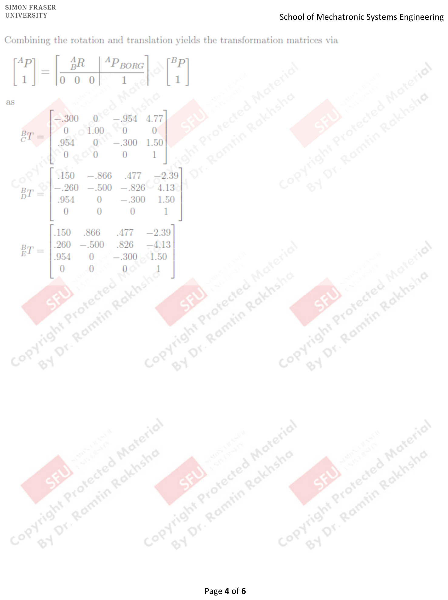

Assignment 1 Solutions
PDF p.1Problem 1
PDF p.1Consider the frames at the corners of a wedge as shown below. Find the value of ${}^{A}_{B}T$, ${}^{B}_{C}T$, ${}^{A}_{C}T$, and ${}^{C}_{D}T$.

The general form of a homogeneous transformation matrix is:
$${}^{A}_{B}T = \begin{bmatrix} {}^{A}_{B}R & {}^{A}P_{B_{ORG}} \\ 0 \; 0 \; 0 & 1 \end{bmatrix}$$For ${}^{A}_{B}T$:
Step 1: Determine the Z-Y-Z Euler angles for the rotation from $\{A\}$ to $\{B\}$.
$$\alpha = 180°, \quad \beta = 0°, \quad \gamma = 90°$$Step 2: Compute the rotation matrix and translation.
$${}^{A}_{B}T = \begin{bmatrix} -1.0000 & -0.0000 & 0 & 0 \\ 0.0000 & -0.0000 & -1.0000 & 4.0000 \\ 0.0000 & -1.0000 & 0.0000 & 0 \\ 0 & 0 & 0 & 1 \end{bmatrix}$$For ${}^{B}_{C}T$:
Step 1: Determine the Euler angles.
$$\alpha = 180° - \arctan(3/4), \quad \beta = 0°, \quad \gamma = -90°$$Step 2: Compute the transformation matrix.
$${}^{B}_{C}T = \begin{bmatrix} -0.8000 & -0.6000 & 0 & 3.0000 \\ -0.0000 & -0.0000 & -1.0000 & 0 \\ -0.6000 & 0.0000 & 0.0000 & 0 \\ 0 & 0 & 0 & 1 \end{bmatrix}$$For ${}^{A}_{C}T$:
Step 1: Determine the Euler angles.
$$\alpha = -\arctan(3/4), \quad \beta = 0°, \quad \gamma = 180°$$Step 2: Compute the transformation matrix.
$${}^{A}_{C}T = \begin{bmatrix} 0.8000 & 0.6000 & 0 & 0 \\ -0.0000 & -0.0000 & -0.0000 & 4.0000 \\ -0.0000 & -0.0000 & 0.0000 & 0 \\ 0 & 0 & 0 & 1 \end{bmatrix}$$For ${}^{C}_{D}T$:
Step 1: Determine the Euler angles.
$$\alpha = -\arctan(3/4), \quad \beta = 0°, \quad \gamma = 180°$$Step 2: Compute the transformation matrix.
$${}^{C}_{D}T = \begin{bmatrix} 0.8000 & 0.6000 & 0 & 0 \\ 0.6000 & -0.8000 & -0.0000 & 5.0000 \\ 0 & 0 & 0 & 2.0000 \\ 0 & 0 & 0 & 1 \end{bmatrix}$$Answer: The four transformation matrices are given above. They encode the relative position and orientation of each pair of frames on the wedge corners.
Problem 2
PDF p.2Determine:
a) The rotation matrix ${}^{A}_{B}R$ that describes frame $\{B\}$ relative to $\{A\}$ if:
$${}^{A}\hat{X}_B = \begin{bmatrix} 1 \\ 0 \\ 0 \end{bmatrix}, \quad {}^{A}\hat{Y}_B = \begin{bmatrix} 0 \\ 0 \\ -1 \end{bmatrix}, \quad {}^{A}\hat{Z}_B = \begin{bmatrix} 0 \\ 1 \\ 0 \end{bmatrix}$$b) The $Z$-$Y$-$Z$ Euler angles required for such a rotation.
Part (a):
Step 1: Construct the rotation matrix by placing the unit vectors of $\{B\}$ expressed in $\{A\}$ as columns:
$${}^{A}_{B}R = \begin{bmatrix} {}^{A}\hat{X}_B & {}^{A}\hat{Y}_B & {}^{A}\hat{Z}_B \end{bmatrix} = \begin{bmatrix} \hat{X}_B \cdot \hat{X}_A & \hat{Y}_B \cdot \hat{X}_A & \hat{Z}_B \cdot \hat{X}_A \\ \hat{X}_B \cdot \hat{Y}_A & \hat{Y}_B \cdot \hat{Y}_A & \hat{Z}_B \cdot \hat{Y}_A \\ \hat{X}_B \cdot \hat{Z}_A & \hat{Y}_B \cdot \hat{Z}_A & \hat{Z}_B \cdot \hat{Z}_A \end{bmatrix}$$Step 2: Substitute the given vectors:
$${}^{A}_{B}R = \begin{bmatrix} 1 & 0 & 0 \\ 0 & 0 & 1 \\ 0 & -1 & 0 \end{bmatrix}$$Part (b):
Step 1: Use the Z-Y-Z Euler angle extraction formulas:
$$\beta = \text{atan2}\!\left(\sqrt{r_{31}^2 + r_{32}^2},\; r_{33}\right)$$ $$\alpha = \text{atan2}(r_{23}/\sin\beta,\; r_{13}/\sin\beta)$$ $$\gamma = \text{atan2}(r_{32}/\sin\beta,\; -r_{31}/\sin\beta)$$Step 2: Evaluate:
$$\alpha = 90°$$ $$\beta = 90°$$ $$\gamma = -90°$$Answer:
- ${}^{A}_{B}R = \begin{bmatrix} 1 & 0 & 0 \\ 0 & 0 & 1 \\ 0 & -1 & 0 \end{bmatrix}$
- Z-Y-Z Euler angles: $\alpha = 90°$, $\beta = 90°$, $\gamma = -90°$
Problem 3
PDF p.3A coordinate frame $\{B\}$ is located at the base of a robot manipulator. $\hat{Z}_B$ points upward. Three cameras are used to view the manipulator. Coordinate frames $\{C\}$, $\{D\}$, and $\{E\}$ describe the camera positions and orientations. The origin of $\{C\}$ is on the $\hat{X}_B$-$\hat{Z}_B$ plane. The cameras are mounted on tripods 1.5 units tall placed at the vertices of an equilateral triangle having $\{B\}$ at the incenter. The robot frame is on the focal axis of each camera (the camera's $\hat{Z}$-axis), and the Euclidean distance from $\{B\}$ to any camera is 5 units, thus:
$${}^{C}P_{B_{ORG}} = {}^{D}P_{B_{ORG}} = {}^{E}P_{B_{ORG}} = \begin{bmatrix} 0 \\ 0 \\ 5 \end{bmatrix}$$Compute the camera transformation matrices: ${}^{B}_{C}T$, ${}^{B}_{D}T$, and ${}^{B}_{E}T$.
Step 1: Use the homogeneous transform structure:
$$\begin{bmatrix} {}^{A}P \\ 1 \end{bmatrix} = \begin{bmatrix} {}^{A}_{B}R & {}^{A}P_{B_{ORG}} \\ 0\;0\;0 & 1 \end{bmatrix} \begin{bmatrix} {}^{B}P \\ 1 \end{bmatrix}$$Step 2: To obtain the transformation matrices, use X-Y-Z fixed angles. The rotation matrix for X-Y-Z fixed angles is:
$${}^{A}R_{XYZ}(\gamma, \beta, \alpha) = \begin{bmatrix} \cos\alpha\cos\beta & \cos\alpha\sin\beta\sin\gamma - \sin\alpha\cos\gamma & \cos\alpha\sin\beta\cos\gamma + \sin\alpha\sin\gamma \\ \sin\alpha\cos\beta & \sin\alpha\sin\beta\sin\gamma + \cos\alpha\cos\gamma & \sin\alpha\sin\beta\cos\gamma - \cos\alpha\sin\gamma \\ -\sin\beta & \cos\beta\sin\gamma & \cos\beta\cos\gamma \end{bmatrix}$$Step 3: The angles are:
- $\gamma = 0°$ (rotation about $X$)
- $\alpha_C = 0°$, $\alpha_D = 120°$, $\alpha_E = 240°$ (rotation about $Z$ — camera placement around the triangle)
- $\beta$: determined from the elevation geometry
The horizontal distance from $\{B\}$ to camera base is:
$$\text{horizontal distance} = \sqrt{5^2 - 1.5^2} = \sqrt{22.75} \approx 4.77$$ PDF p.3The position vectors to the camera frame origins are:
$${}^{B}P_{C_{ORG}} = \begin{bmatrix} 4.77 \\ 0 \\ 1.50 \end{bmatrix}$$ $${}^{B}P_{D_{ORG}} = \begin{bmatrix} -2.39 \\ 4.13 \\ 1.5 \end{bmatrix}$$ $${}^{B}P_{E_{ORG}} = \begin{bmatrix} -2.39 \\ -4.13 \\ 1.50 \end{bmatrix}$$ PDF p.4Step 4: Combining the rotation and translation yields the transformation matrices:
$${}^{B}_{C}T = \begin{bmatrix} -.300 & 0 & -.954 & 4.77 \\ 0 & 1.00 & 0 & 0 \\ .954 & 0 & -.300 & 1.50 \\ 0 & 0 & 0 & 1 \end{bmatrix}$$ $${}^{B}_{D}T = \begin{bmatrix} .150 & -.866 & .477 & -2.39 \\ -.260 & -.500 & -.826 & 4.13 \\ .954 & 0 & -.300 & 1.50 \\ 0 & 0 & 0 & 1 \end{bmatrix}$$ $${}^{B}_{E}T = \begin{bmatrix} .150 & .866 & .477 & -2.39 \\ .260 & -.500 & .826 & -4.13 \\ .954 & 0 & -.300 & 1.50 \\ 0 & 0 & 0 & 1 \end{bmatrix}$$Answer: The three camera transformation matrices are shown above.
Problem 4
PDF p.5The position and velocity of an object are known to be ${}^{B}P_i = \begin{bmatrix} 0 & 0.5 & 0 \end{bmatrix}^T$ and ${}^{B}V_i = \begin{bmatrix} 1.9 & 0.1 & -0.3 \end{bmatrix}^T$ at time $t_0$, respectively. If the velocity is constant and:
$${}^{A}_{B}T = \begin{bmatrix} 0.0722 & -0.963 & 0.259 & 5.00 \\ 0.954 & 0.00868 & -0.298 & 6.50 \\ 0.290 & 0.269 & 0.919 & 8.00 \\ 0 & 0 & 0 & 1 \end{bmatrix}$$then what is ${}^{A}P$ after 5 units of time?
Step 1: Compute the position in $\{B\}$ after 5 time units:
$${}^{B}P_f = {}^{B}P_i + 5 \cdot {}^{B}V_i = \begin{bmatrix} 0 \\ 0.5 \\ 0 \end{bmatrix} + 5 \begin{bmatrix} 1.9 \\ 0.1 \\ -0.3 \end{bmatrix} = \begin{bmatrix} 9.5 \\ 1.00 \\ -1.50 \end{bmatrix}$$Step 2: Transform to frame $\{A\}$:
$${}^{A}P_f = {}^{A}_{B}T \;{}^{B}P_f = {}^{A}_{B}R \;{}^{B}P_f + {}^{A}P_{B_{ORG}}$$ $${}^{A}P_f = \begin{bmatrix} 0.0722 & -0.963 & 0.259 \\ 0.954 & 0.00868 & -0.298 \\ 0.290 & 0.269 & 0.919 \end{bmatrix} \begin{bmatrix} 9.5 \\ 1.00 \\ -1.50 \end{bmatrix} + \begin{bmatrix} 5.00 \\ 6.50 \\ 8.00 \end{bmatrix}$$Answer: ${}^{A}P = \begin{bmatrix} -4.89 & 2.11 & 3.60 \end{bmatrix}^T$
Problem 5
PDF p.5A vector ${}^{A}P$ is rotated about $\hat{Z}_A$ by $\theta$ degrees, and is subsequently rotated about $\hat{Y}_A$ by $\phi$ degrees. Give the rotation matrix that accomplishes these rotations in the given order.
Step 1: Since both rotations are about fixed (frame $\{A\}$) axes, we pre-multiply. The combined rotation is:
$$R = \text{rot}(Y_A, \phi) \cdot \text{rot}(Z_A, \theta)$$Step 2: Write out each rotation matrix:
$$\text{rot}(Z_A, \theta) = \begin{bmatrix} \cos\theta & -\sin\theta & 0 \\ \sin\theta & \cos\theta & 0 \\ 0 & 0 & 1 \end{bmatrix}, \quad \text{rot}(Y_A, \phi) = \begin{bmatrix} \cos\phi & 0 & \sin\phi \\ 0 & 1 & 0 \\ -\sin\phi & 0 & \cos\phi \end{bmatrix}$$Step 3: Multiply:
$$R = \begin{bmatrix} \cos\phi & 0 & \sin\phi \\ 0 & 1 & 0 \\ -\sin\phi & 0 & \cos\phi \end{bmatrix} \begin{bmatrix} \cos\theta & -\sin\theta & 0 \\ \sin\theta & \cos\theta & 0 \\ 0 & 0 & 1 \end{bmatrix}$$Answer:
$$R = \begin{bmatrix} \cos\phi\cos\theta & -\cos\phi\sin\theta & \sin\phi \\ \sin\theta & \cos\theta & 0 \\ -\sin\phi\cos\theta & \sin\phi\sin\theta & \cos\phi \end{bmatrix}$$Problem 6
PDF p.6A velocity vector is given by ${}^{B}V = \begin{bmatrix} 30.0 & 40.0 & 50.0 \end{bmatrix}^T$. Given:
$${}^{A}_{B}T = \begin{bmatrix} 0.707 & 0 & -0.707 & 11.0 \\ -0.612 & 0.500 & -0.612 & 3.0 \\ 0.353 & 0.866 & 0.353 & -9.0 \\ 0 & 0 & 0 & 1 \end{bmatrix}$$Compute ${}^{A}V$.
Step 1: Velocity is a "free vector" and only will be affected by rotation, and not by translation.
Step 2: Extract the rotation matrix ${}^{A}_{B}R$ from the transform and multiply:
$${}^{A}V = {}^{A}_{B}R \;{}^{B}V = \begin{bmatrix} .707 & 0 & -.707 \\ -.612 & .500 & -.612 \\ .353 & .866 & .353 \end{bmatrix} \begin{bmatrix} 30.0 \\ 40.0 \\ 50.0 \end{bmatrix}$$ $${}^{A}V = \begin{bmatrix} -14.1 \\ -29.0 \\ 62.9 \end{bmatrix}$$Answer: ${}^{A}V = \begin{bmatrix} -14.1 & -29.0 & 62.9 \end{bmatrix}^T$
Problem 7
PDF p.6Given:
$${}^{A}_{B}T = \begin{bmatrix} 0.25 & 0.43 & 0.86 & 5.0 \\ 0.87 & -0.50 & 0.00 & -4.0 \\ 0.43 & 0.75 & -0.5 & 3.0 \\ 0 & 0 & 0 & 1 \end{bmatrix}$$What is ${}^{B}P_{A_{ORG}}$?
Step 1: We know the relationship:
$${}^{A}_{B}T \begin{bmatrix} {}^{B}P_{A_{ORG}} \\ 1 \end{bmatrix} = {}^{A}_{B}R \;{}^{B}P_{A_{ORG}} + {}^{A}P_{B_{ORG}}$$and ${}^{A}P_{A_{ORG}} = \begin{bmatrix} 0 \\ 0 \\ 0 \end{bmatrix}$ (the origin of $\{A\}$ in $\{A\}$), so:
$${}^{B}P_{A_{ORG}} = -{}^{A}_{B}R^{T} \;{}^{A}P_{B_{ORG}}$$Step 2: The inverse of a homogeneous transform is:
$${}^{B}_{A}T = {}^{A}_{B}T^{-1} = \begin{bmatrix} {}^{A}_{B}R^T & -{}^{A}_{B}R^T \;{}^{A}P_{B_{ORG}} \\ 0\;0\;0 & 1 \end{bmatrix}$$Step 3: Compute:
$${}^{B}P_{A_{ORG}} = -{}^{A}_{B}R^T \;{}^{A}P_{B_{ORG}} = -\begin{bmatrix} .25 & .87 & .43 \\ .43 & -.50 & .75 \\ .86 & .00 & -.5 \end{bmatrix} \begin{bmatrix} 5.0 \\ -4.0 \\ 3.0 \end{bmatrix}$$ $${}^{B}P_{A_{ORG}} = -\begin{bmatrix} 0.25(5) + 0.87(-4) + 0.43(3) \\ 0.43(5) + (-0.50)(-4) + 0.75(3) \\ 0.86(5) + 0.00(-4) + (-0.5)(3) \end{bmatrix} = -\begin{bmatrix} -0.94 \\ 6.40 \\ 2.80 \end{bmatrix}$$ $${}^{B}P_{A_{ORG}} = \begin{bmatrix} 0.94 \\ -6.4 \\ -2.8 \end{bmatrix}$$Answer: ${}^{B}P_{A_{ORG}} = \begin{bmatrix} 0.94 & -6.4 & -2.8 \end{bmatrix}^T$